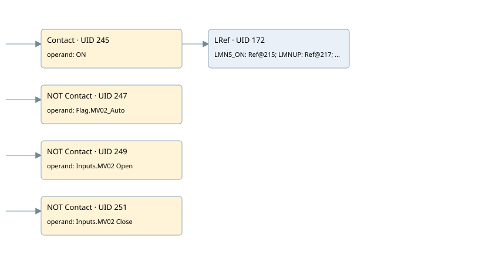

controll pc01 moduling mv02
cyc_int5 ogni 100ms · 검색 색인 순서 4 · 원본 내부 NID 추정 4
백업 PLF 원본의 3098984 바이트 위치에서 복원한 XML. 검색 문서 7의 객체 키 16102200d56a000000000000와 연결했다. 이름 해석 16/25개. 남은 RefId는 상수 또는 미해석 참조다.
연결 구조 다시 그리기
원본 Part/PCon/Wire를 이용한 연결도다. TIA 화면의 래더 배치 또는 실행 결과를 재현한 그림은 아니다. 핀 연결은 아래 표와 원본 XML을 기준으로 읽는다. 노드 위에 마우스를 두면 피연산자 이름을 볼 수 있다.

접점·코일·블록과 피연산자
| Part UID | Gate | Negated 핀 | 연결 피연산자 |
|---|---|---|---|
| 245 | Contact | operand = ON | |
| 247 | Contact | operand | operand = Flag.MV02_Auto |
| 249 | Contact | operand | operand = Inputs.MV02 Open |
| 251 | Contact | operand | operand = Inputs.MV02 Close |
| 172 | LRef | 호출 참조: RefId 113; LMNS_ON = RefId (RefId 없음) / ORef UID 215; LMNUP = RefId (RefId 없음) / ORef UID 217; LMNDN = RefId (RefId 없음) / ORef UID 219; PVPER_ON = RefId (RefId 없음) / ORef UID 221; CYCLE = T#100MS; SP_INT = Real_SPPC01; PV_IN = Real_PC01; PV_PER = RefId (RefId 없음) / ORef UID 226; GAIN = -0.22; TI = T#2S; DEADB_W = 2.0; PV_FAC = RefId (RefId 없음) / ORef UID 231; PV_OFF = RefId (RefId 없음) / ORef UID 233; PULSE_TM = T#200MS; BREAK_TM = T#2S_500MS; MTR_TM = T#18S; DISV = 1.0; QLMNUP = PID MV02 UP; QLMNDN = PID MV02 Down; PV = RefId (RefId 없음) / ORef UID 241; ER = RefId (RefId 없음) / ORef UID 243 |
접점 경로를 펼친 조건식
Contact·O/A·비교기의 원본 연결을 읽기 쉽게 펼친 보조 해석이다. POWER는 전원 레일 시작을 뜻한다. 호출 블록·에지·타이머의 내부 동작과 다중 쓰기 순서는 이 표로 실행 검증하지 않았다. 미해석 핀과 RefId는 원문 연결표에서 확인한다.
| UID | 동작 | 대상 | 원본 접점 경로 | 내용 |
|---|
원본 배선 연결
| Wire UID | 동일 Wire 연결 끝점 |
|---|---|
| 253 | Powerrail {} ↔ Part 245.in ↔ Part 247.in ↔ Part 249.in ↔ Part 251.in |
| 211 | ORef 194 (ON) ↔ Part 245.operand |
| 246 | Part 245.out ↔ Part 172.en |
| 212 | ORef 195 (Flag.MV02_Auto) ↔ Part 247.operand |
| 248 | Part 247.out ↔ Part 172.COM_RST |
| 213 | ORef 196 (Inputs.MV02 Open) ↔ Part 249.operand |
| 250 | Part 249.out ↔ Part 172.LMNR_HS |
| 214 | ORef 197 (Inputs.MV02 Close) ↔ Part 251.operand |
| 252 | Part 251.out ↔ Part 172.LMNR_LS |
| 216 | ORef 215 (RefId (RefId 없음)) ↔ Part 172.LMNS_ON |
| 218 | ORef 217 (RefId (RefId 없음)) ↔ Part 172.LMNUP |
| 220 | ORef 219 (RefId (RefId 없음)) ↔ Part 172.LMNDN |
| 222 | ORef 221 (RefId (RefId 없음)) ↔ Part 172.PVPER_ON |
| 223 | ORef 198 (T#100MS) ↔ Part 172.CYCLE |
| 224 | ORef 199 (Real_SPPC01) ↔ Part 172.SP_INT |
| 225 | ORef 200 (Real_PC01) ↔ Part 172.PV_IN |
| 227 | ORef 226 (RefId (RefId 없음)) ↔ Part 172.PV_PER |
| 228 | ORef 201 (-0.22) ↔ Part 172.GAIN |
| 229 | ORef 202 (T#2S) ↔ Part 172.TI |
| 230 | ORef 203 (2.0) ↔ Part 172.DEADB_W |
| 232 | ORef 231 (RefId (RefId 없음)) ↔ Part 172.PV_FAC |
| 234 | ORef 233 (RefId (RefId 없음)) ↔ Part 172.PV_OFF |
| 235 | ORef 204 (T#200MS) ↔ Part 172.PULSE_TM |
| 236 | ORef 205 (T#2S_500MS) ↔ Part 172.BREAK_TM |
| 237 | ORef 206 (T#18S) ↔ Part 172.MTR_TM |
| 238 | ORef 207 (1.0) ↔ Part 172.DISV |
| 239 | Part 172.QLMNUP ↔ ORef 208 (PID MV02 UP) |
| 240 | Part 172.QLMNDN ↔ ORef 209 (PID MV02 Down) |
| 242 | Part 172.PV ↔ ORef 241 (RefId (RefId 없음)) |
| 244 | Part 172.ER ↔ ORef 243 (RefId (RefId 없음)) |
식별자 해석 근거 25개
| ORef UID | RefId | 이름 | IdentXmlPart 파일 | 해석 방법 |
|---|---|---|---|---|
| 194 | 17 | ON | 0670-IdentXmlPart.xml | UID/RID + search-text + NID agreement |
| 195 | 34 | Flag.MV02_Auto | 0668-IdentXmlPart.xml | UID/RID + search-text + NID agreement |
| 196 | 121 | Inputs.MV02 Open | 0668-IdentXmlPart.xml | UID/RID + search-text + NID agreement |
| 197 | 122 | Inputs.MV02 Close | 0668-IdentXmlPart.xml | UID/RID + search-text + NID agreement |
| 215 | (RefId 없음) | 미해석 RefId | 식별 선언 원본 참조 | 미해석 |
| 217 | (RefId 없음) | 미해석 RefId | 식별 선언 원본 참조 | 미해석 |
| 219 | (RefId 없음) | 미해석 RefId | 식별 선언 원본 참조 | 미해석 |
| 221 | (RefId 없음) | 미해석 RefId | 식별 선언 원본 참조 | 미해석 |
| 198 | 21 | T#100MS | 0667-IdentXmlPart.xml | literal candidate: UID/RID/NID + nearby named declarations + search-text agreement |
| 199 | 31 | Real_SPPC01 | 0669-IdentXmlPart.xml | UID/RID + search-text + NID agreement |
| 200 | 33 | Real_PC01 | 0669-IdentXmlPart.xml | UID/RID + search-text + NID agreement |
| 226 | (RefId 없음) | 미해석 RefId | 식별 선언 원본 참조 | 미해석 |
| 201 | 39 | -0.22 | 0667-IdentXmlPart.xml | literal candidate: UID/RID/NID + nearby named declarations + search-text agreement |
| 202 | 40 | T#2S | 0667-IdentXmlPart.xml | literal candidate: UID/RID/NID + nearby named declarations + search-text agreement |
| 203 | 22 | 2.0 | 0667-IdentXmlPart.xml | literal candidate: UID/RID/NID + nearby named declarations + search-text agreement |
| 231 | (RefId 없음) | 미해석 RefId | 식별 선언 원본 참조 | 미해석 |
| 233 | (RefId 없음) | 미해석 RefId | 식별 선언 원본 참조 | 미해석 |
| 204 | 25 | T#200MS | 0667-IdentXmlPart.xml | literal candidate: UID/RID/NID + nearby named declarations + search-text agreement |
| 205 | 41 | T#2S_500MS | 0667-IdentXmlPart.xml | literal candidate: UID/RID/NID + nearby named declarations + search-text agreement |
| 206 | 42 | T#18S | 0667-IdentXmlPart.xml | literal candidate: UID/RID/NID + nearby named declarations + search-text agreement |
| 207 | 24 | 1.0 | 0667-IdentXmlPart.xml | literal candidate: UID/RID/NID + nearby named declarations + search-text agreement |
| 208 | 43 | PID MV02 UP | 0670-IdentXmlPart.xml | UID/RID + search-text + NID agreement |
| 209 | 44 | PID MV02 Down | 0670-IdentXmlPart.xml | UID/RID + search-text + NID agreement |
| 241 | (RefId 없음) | 미해석 RefId | 식별 선언 원본 참조 | 미해석 |
| 243 | (RefId 없음) | 미해석 RefId | 식별 선언 원본 참조 | 미해석 |
검색 코드 보조 자료
참조 명칭을 찾기 위한 자료이며 실행 순서나 AND/OR 관계는 위 연결표로 확인한다.
"on" cont_s "pid_mv-02" t#100ms #real_sppc01 #real_pc01 -0.22 t#2s 2.0 t#200ms t#2s_500ms t#18s 1.0 "flag".mv02_auto "inputs"."mv02 open" "inputs"."mv02 close" "pid mv02 up" "pid mv02 down"